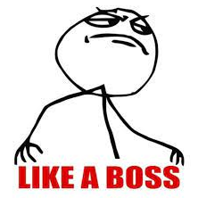

Bug Tracker

Um bug tracker é um software que acompanha os bugs e problemas de um projeto de software. Ele pode ser usado para rastrear os bugs de um projeto e fornecer um histórico de todos os problemas que foram encontrados e corrigidos, o que pode ajudar a identificar tendências de bugs.
A principal vantagem de usar um bug tracker é que ele fornece uma maneira organizada de gerenciar os bugs e as solicitações de melhorias em um projeto. Bug trackers geralmente oferecem aos desenvolvedores uma maneira de classificar, priorizar e gerenciar as solicitações, o que permite que eles se concentrem nas correções mais importantes.
Alguns bug trackers também permitem que os desenvolvedores enviem um alerta para os outros membros do time quando um bug é encontrado, para que ele possa ser rapidamente corrigido.
A maioria das organizações usa bug trackers para gerenciar e rastrear problemas. Isso simplifica o processo de identificar e classificar bugs, bem como acompanhar o progresso na solução deles.
São exemplos de bug trackers:
Desenvolver um bug tracker é muito relevante profissionalmente principalmente pelo imenso leque de conhecimentos de desenvolvimento que este projeto irá proporcioná-lo, como desenvolvimento interfaces, front-end e back-end usando um framework, banco de dados relacionais, autenticação e autorização, deployment na nuvem e inúmeras outras habilidades técnicas.
Esse é um projeto que, diferentemente de projetos "brincadeira", te farão ser visto como um desenvolvedor profissional por resolver um problema relevante. Qualquer recrutador consegue ver real valor no que você fez. Possivelmente, a empresa te contratando esteja resolvendo um problema similar, e com toda certeza, essa empresa usa algum tipo de bug tracker para gerenciar seus projetos. Com isso, você criará uma conexão com eles durante o processo seletivo e eles saberão fazer perguntas convenientes sobre o seu projeto.
Este projeto pode ser realizado de inúmeras maneiras. mas sugerimos a seguinte stack:
Front end:
Back end:
Miscelâneo:
Os projetos #1, #2, #3, #4 e #5 são pré-requisitos deste projeto.
Menos de 100 anos
Se vire.
Projeto